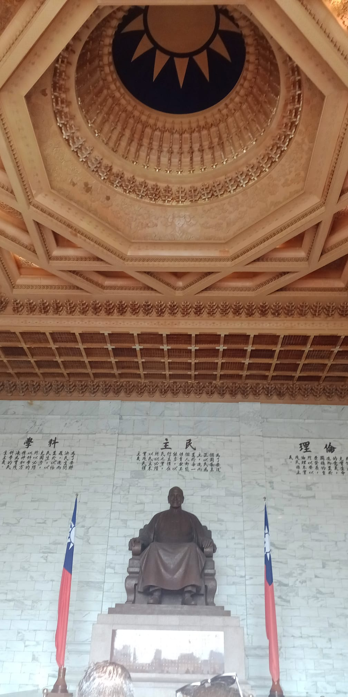

Code of ethics
The editorial team, the reviewers selected by it and the authors who submit articles for publication in Asia / Latin America, accept and undertake to respect and enforce a code
of ethics composed of the following guidelines.
The editorial team must:
- Select the articles whose subject matter offers a contribution to the objectives of the journal
- Share the published articles in specialized academic circles
- Guarantee the anonymous review of the articles under evaluation
- Select a team of stable and specialized evaluators
- Preserve the anonymity of the particular reviewers of each article throughout the blind peer review process
- Act based on the full responsibility and authority to accept or reject articles, which will be based on the opinion of the expert evaluators in the blind evaluation process. That way, editors will avoid conflicts of interest
- Carry out the evaluation in the times requested by the editorial team
- Demand that the evaluation be blind and confidential
- Send a critical and complete report according to the offered form which can be consulted on the web
- Make authors consider relevant works that have not yet been cited
- Be submitted to the peer review system
- Present original works that have not been published or presented in other media before
- Attest that the postulated work is exhaustive, rigorous, honest and the research results are true and verifiable
- Provide a statement that the article is based on real and authentic data, is original and of its authorship
To cite the articles, please use the following formula:
Last Name, N., (year), “Title of the chapter”, in Asia / América Latina Magazine, Vol (N), pp. XX-XX. DOI: 10.33177 / X.X
Plagiarism detection
For plagiarism detection, the Asia / Latin America editorial team checks web search engines for randomly selected paragraphs of the submitted articles. In the event that a coincidence of more than ten words in a row is found with respect to the text of a text already published – and considering that there is no corresponding citation – the editorial team will contact the authors to notify them on the detection of said anomaly, against which authors have the right to make the corresponding discharge within forty-eight running hours of having been notified.
If the editorial team finds the reasons given by the authors pertinent, the article evaluation process will proceed, discarding the portion of the text that has been found to be plagiarized. The evaluators will in any case be alerted to the incident, and will be responsible for verifying that there are no other types of non-textual plagiarism (theoretical, methodological, bibliographic, etc.).
In every case in which the number of consecutive words coinciding is greater than thirty, or in which there is more than one plagiarized passage, the article will be rejected, and the authors forbidden from the possibility of applying for new articles for a period of no less than three years.
Open access
Asia / Latin America provides open access to all its content, based on the principle that offering the public free access to research helps a greater global exchange of knowledge.
Asia / Latin America allows readers to read, download, copy, distribute, print, search or link the full texts of its articles and use them for any other legal purpose, free of charge.
Declaration of originality and copyright waiver
Authors must attach a statement attesting to the originality of all the content of the postulated article, as well as assigning the rights of reproduction and distribution thereof, in case of being published, in accordance with our policy of Open access guaranteed by the Creative Commons Attibution 4.0 International license.
The model for said declaration can be downloaded [Es] HERE
Digital preservation policies
The journal maintains a general and exclusive policy of permission for self-archiving from the author or, failing this, for archiving by the institution to which they authorize, under the Commons 4.0 license. The archived version must be the one published by the Journal and must include the cover. There is no embargo period for the file.